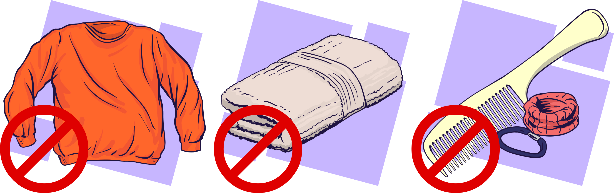

O piolho é um agravo muito prevalente no sistema prisional. Para prevenir a pediculose, o ideal é evitar o compartilhamento de roupas, toalhas, acessórios de cabelo e outros objetos de uso pessoal, bem como evitar o contato direto cabeça com cabeça ou cabelo com cabelo de pessoas infestadas.
Limpeza exagerada e uso de inseticidas no ambiente são desnecessários. Manter objetos submersos em água por 10 minutos é uma medida suficiente para matar o piolho presente nos utensílios contaminados.